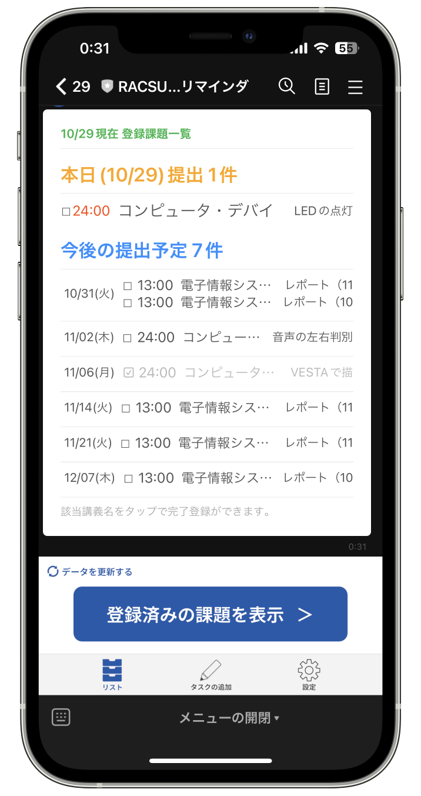

RACSU
信大課題リマインダー
気づかない間に、提出期限を過ぎていた…
そんなことになる前に、RACSUを使ってみませんか？
RACSUは、eAlpsと連携して提出期限がある課題を自動取得・通知します。
さらに、LINEのトーク上で課題の完了登録・eAlps以外の課題も追加可能。
信州大学e-Learningセンター eALPluS認定事案
RACSU 信大課題リマインダーは、信州大学e-LearningセンターのeALPluS認定事案を受け、オープンソース（Apache-2.0 License）で開発中です。
eALPluSについてはこちらをご覧ください。
Githubリポジトリはこちら。
eALPluS認定日：2023/00/00 最終更新日：2023/11/28


RACSUとは？
"RACSU 信大課題リマインダー" は、信州大学e-Learningシステム "eAlps" 上で課された課題を自動で取得・通知するサービスです。
気づかないうちにeAlps上に現れ、気づかないうちに期限が過ぎている…
そんな課題を経験をしたことはありませんか？
RACSUは、当日と翌日の提出課題を毎朝メールでお知らせします。
さらに、LINEトーク上では課題の完了登録・一覧への課題の手動追加も可能。

RACSUの運営を手伝ってくれる方募集中！
RACSUは、信州大学在学中の学生によって運営されています。
運営・保守を手伝ってくれる方を募集中です！
詳しくはLINEまたはメールでお問い合わせください。
開発代表：渡邊友翔（電気情報システム工学科 21T）
アイコン作成：